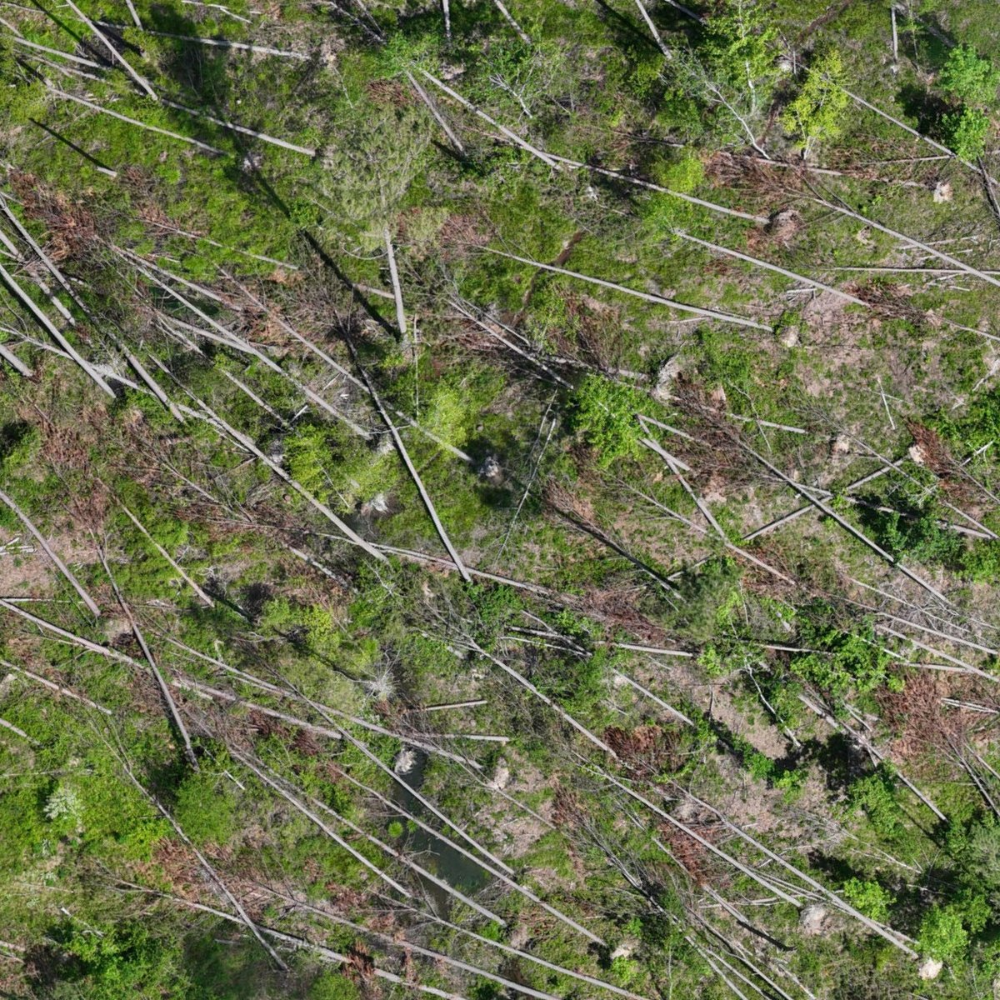
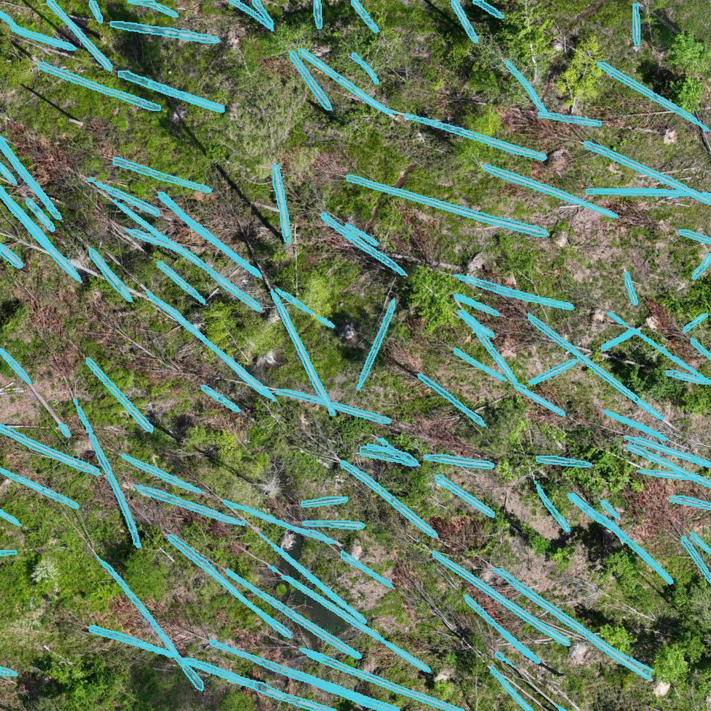
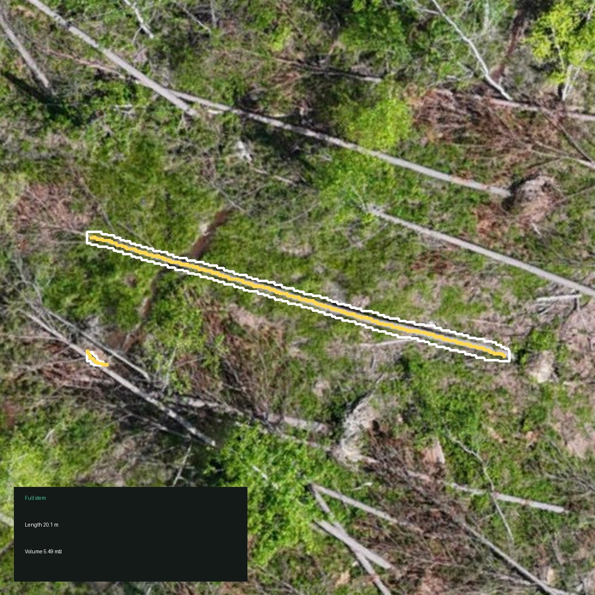
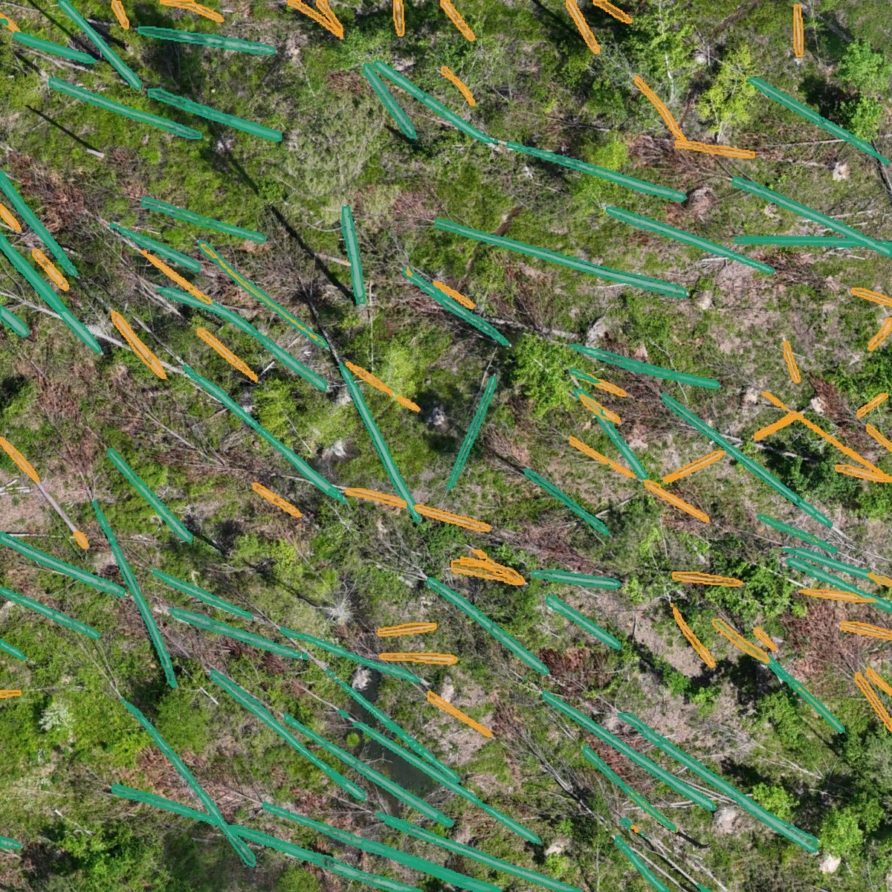
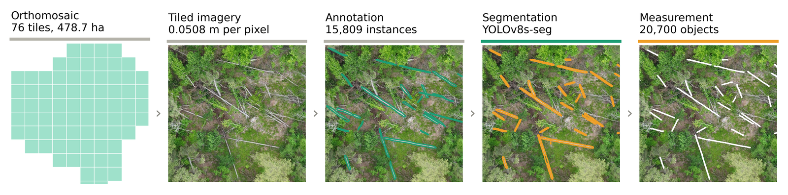
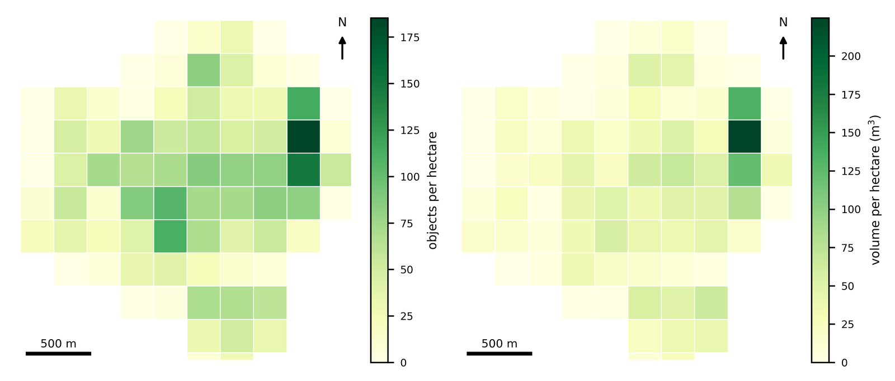
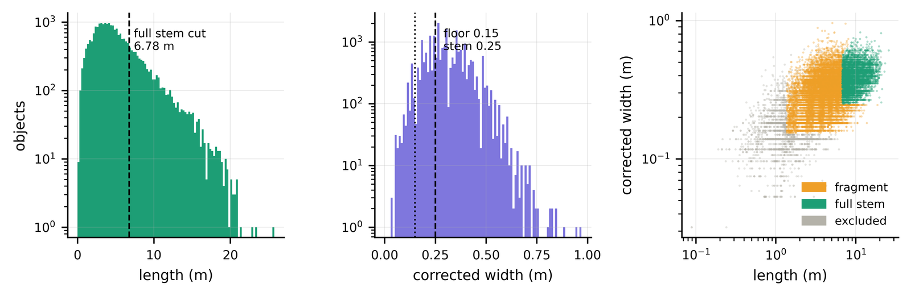
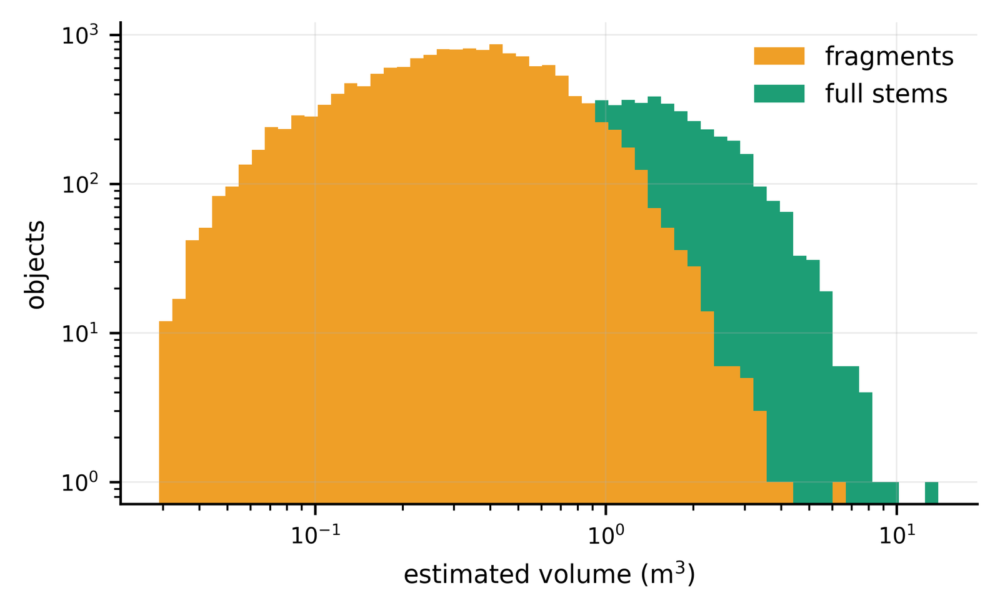

Fallen wood after Hurricane Helene, measured from the air
We flew a drone over a windthrow site in the Georgia Coastal Plain and used instance segmentation to find, measure and classify the downed wood. The map shows how much lies on the ground in each square of the site.
Wood volume per hectare
Loading site data.
How it works
One pass from drone imagery to an inventory table, with every piece measured individually.

Fly and tile
A drone photographs the site after the storm. The stitched orthomosaic is cut into squares of 2,500 pixels.

Detect
A YOLOv8 segmentation model, trained on 15,809 hand-drawn outlines, traces each piece of fallen wood.

Measure
Each outline gets a centreline and widths sampled along it. Volume comes from stacking cone sections, or frusta, along the length.

Classify
Long, slender pieces are full stems and the rest are fragments. Pieces cut by a tile edge or too small to measure are set aside.

A quarter of the pieces, most of the wood
Full stems are long and slender enough to be whole fallen trees. They are a minority of the pieces but carry most of the volume.
Piece length
Counted pieces by length, in one-metre bins. The dashed line marks the minimum length for a full stem.
Figures from the paper
Detection examples and the main results, at web size.



By the numbers
Lengths, widths and volumes are measured per piece. Typical values are medians.
Wood is concentrated
Team
- Dang Hoang AI@UGA, University of Georgia
- Rishab Subramaniyan AI@UGA, University of Georgia
- Owen Norman Brown University
- Joey Hattan AI@UGA, University of Georgia
- Roger C. Lowe III Warnell School of Forestry and Natural Resources, University of Georgia
Resources
- Source codePipeline, classification rules and evaluation, MIT licence
- Results in detailEvery reported number, with how it is computed
- PaperIn preparation